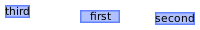
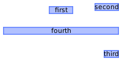
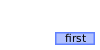

Module: wibox.layout.manual
A layout with widgets added at specific positions.
Use cases include desktop icons, complex custom composed widgets, a floating client layout and fine grained control over the output.

Usage:
local w1, w2 = generic_widget(), generic_widget()
w1.point = {x=75,y=5}
w1.text = 'first'
w1.forced_width = 50
w2.text = 'second'
w2.point = function(geo, args)
-- Bottom right
return {
x = args.parent.width-geo.width,
y = args.parent.height-geo.height
}
end
wibox.layout {
w1,
w2,
generic_widget('third'),
layout = wibox.layout.manual
}
Info:
- Copyright: 2016 Emmanuel Lepage Vallee
- Author: Emmanuel Lepage Vallee
Constructors
| wibox.layout.manual (...) | Create a manual layout. |
Object properties
| children | table | Get or set the children elements. |
| all_children | table | Get all direct and indirect children widgets. |
| forced_height | number or nil | Force a widget height. |
| forced_width | number or nil | Force a widget width. |
| opacity | number | The widget opacity (transparency). |
| visible | boolean | The widget visibility. |
Object methods
| :add (layout, ...) | Add some widgets to the given stack layout. |
| :remove (The) | Remove a widget from the layout. |
| :insert (index, widget) | Insert a new widget in the layout at position index. |
| :remove_widgets (widget) | Remove one or more widgets from the layout. |
| :add_at (widget, point) | Add a widget at a specific point. |
| :move (index, point) | Move a widget (by index). |
| :move_widget (widget, point) | Move a widget. |
| :setup (args) | Set a declarative widget hierarchy description. |
| :buttons (_buttons) | Set/get a widget’s buttons. |
| :emit_signal_recursive (signal_name, ...) | Emit a signal and ensure all parent widgets in the hierarchies also forward the signal. |
| :emit_signal (name, ...) | Emit a signal. |
| :connect_signal (name, func) | Connect to a signal. |
| :weak_connect_signal (name, func) | Connect to a signal weakly. |
Signals
| widget::layout_changed | When the layout (size) change. |
| widget::redraw_needed | When the widget content changed. |
| button::press | When a mouse button is pressed over the widget. |
| button::release | When a mouse button is released over the widget. |
| mouse::enter | When the mouse enter a widget. |
| mouse::leave | When the mouse leave a widget. |
Constructors
- wibox.layout.manual (...)
-
Create a manual layout.
Parameters:
- ... table Widgets to add to the layout.
Object properties
- children (table)
-
Get or set the children elements.
Type constraints:
- The table children
- all_children (table)
-
Get all direct and indirect children widgets.
This will scan all containers recursively to find widgets
Warning: This method it prone to stack overflow id the widget, or any of its
children, contain (directly or indirectly) itself.
Type constraints:
- The table children
- forced_height (number or nil)
-
Force a widget height.
Type constraints:
- height
number or nil
The height (
nilfor automatic)
- height
number or nil
The height (
- forced_width (number or nil)
-
Force a widget width.
Type constraints:
- width
number or nil
The width (
nilfor automatic)
- width
number or nil
The width (
- opacity (number)
-
The widget opacity (transparency).
Type constraints:
- opacity number The opacity (between 0 and 1) (default 1)
- visible (boolean)
- The widget visibility.
Object methods
- :add (layout, ...)
-
Add some widgets to the given stack layout.
Parameters:
- layout The layout you are modifying.
- ... widget Widgets that should be added
- :remove (The)
-
Remove a widget from the layout.
Parameters:
- The index widget index to remove
Returns:
-
boolean
index If the operation is successful
- :insert (index, widget)
-
Insert a new widget in the layout at position
index.Parameters:
- index number The position
- widget The widget
Returns:
-
boolean
If the operation is successful
- :remove_widgets (widget)
-
Remove one or more widgets from the layout.
The last parameter can be a boolean, forcing a recursive seach of the widget(s) to remove.
Parameters:
- widget … Widgets that should be removed (must at least be one)
Returns:
-
boolean
If the operation is successful
- :add_at (widget, point)
-
Add a widget at a specific point.
The point can either be a function or a table. The table follow the generic geometry format used elsewhere in Awesome.
- x: The horizontal position.
- y: The vertical position.
- width: The width.
- height: The height.
If a function is used, it follows the same prototype as awful.placement functions.
- geo:
- x: The horizontal position (always 0).
- y: The vertical position (always 0).
- width: The width.
- height: The height.
- geometry: A function to get or set the geometry (for compatibility). The function is compatible with the awful.placement prototype.
- args:
- parent The layout own geometry
- x: The horizontal position (always 0).
- y: The vertical position (always 0).
- width: The width.
- height: The height.
- geometry: A function to get or set the geometry (for compatibility) The function is compatible with the awful.placement prototype.
- parent The layout own geometry

Parameters:
- widget widget The widget.
- point
table or function
Either an
{x=x,y=y}table or a function returning the new geometry.
Usage:
local l = wibox.layout { layout = wibox.layout.manual } -- -- Option 1: Set the point directly in the widget local w1 = generic_widget() w1.point = {x=75, y=5} w1.text = 'first' w1.forced_width = 50 l:add(w1) -- -- Option 2: Set the point directly in the widget as a function local w2 = generic_widget() w2.text = 'second' w2.point = function(geo, args) return { x = args.parent.width - geo.width, y = 0 } end l:add(w2) -- -- Option 3: Set the point directly in the widget as an awful.placement -- function. local w3 = generic_widget() w3.text = 'third' w3.point = awful.placement.bottom_right l:add(w3) -- -- Option 4: Use
:add_atinstead of using the.pointproperty. This works -- with all 3 ways to define the point. -- function. local w4 = generic_widget() w4.text = 'fourth' l:add_at(w4, awful.placement.centered + awful.placement.maximize_horizontally) - :move (index, point)
-
Move a widget (by index).
Parameters:
- index number The widget index.
- point table or function A new point value.
See also:
- :move_widget (widget, point)
-
Move a widget.

Parameters:
- widget widget The widget.
- point table or function A new point value.
See also:
Usage:
local l = wibox.layout { layout = wibox.layout.manual } -- local w1 = generic_widget() w1.point = {x=75, y=5} w1.text = 'first' w1.forced_width = 50 l:add(w1) l:move_widget(w1, awful.placement.bottom_right)
- :setup (args)
-
Set a declarative widget hierarchy description.
See The declarative layout system
Parameters:
- args An array containing the widgets disposition
- :buttons (_buttons)
-
Set/get a widget’s buttons.
Parameters:
- _buttons The table of buttons that should bind to the widget.
- :emit_signal_recursive (signal_name, ...)
-
Emit a signal and ensure all parent widgets in the hierarchies also
forward the signal. This is useful to track signals when there is a dynamic
set of containers and layouts wrapping the widget.
Parameters:
- signal_name string
- ... Other arguments
- :emit_signal (name, ...)
-
Emit a signal.
Parameters:
- name string The name of the signal.
- ... Extra arguments for the callback functions. Each connected function receives the object as first argument and then any extra arguments that are given to emit_signal().
- :connect_signal (name, func)
-
Connect to a signal.
Parameters:
- name string The name of the signal.
- func function The callback to call when the signal is emitted.
- :weak_connect_signal (name, func)
-
Connect to a signal weakly.
This allows the callback function to be garbage collected and automatically disconnects the signal when that happens.
Warning: Only use this function if you really, really, really know what you are doing.
Parameters:
- name string The name of the signal.
- func function The callback to call when the signal is emitted.
Signals
- widget::layout_changed
-
When the layout (size) change.
This signal is emitted when the previous results of
:layout()and:fit()are no longer valid. Unless this signal is emitted,:layout()and:fit()must return the same result when called with the same arguments.See also:
- widget::redraw_needed
-
When the widget content changed.
This signal is emitted when the content of the widget changes. The widget will
be redrawn, it is not re-layouted. Put differently, it is assumed that
:layout()and:fit()would still return the same results as before.See also:
- button::press
-
When a mouse button is pressed over the widget.
Arguments:
- lx number The horizontal position relative to the (0,0) position in the widget.
- ly number The vertical position relative to the (0,0) position in the widget.
- button number The button number.
- mods table The modifiers (mod4, mod1 (alt), Control, Shift)
- find_widgets_result The entry from the result of
wibox.drawable:find_widgets for the position that the mouse hit.
- drawable wibox.drawable The drawable containing the widget.
- widget widget The widget being displayed.
- hierarchy wibox.hierarchy The hierarchy managing the widget’s geometry.
- x number An approximation of the X position that the widget is visible at on the surface.
- y number An approximation of the Y position that the widget is visible at on the surface.
- width number An approximation of the width that the widget is visible at on the surface.
- height number An approximation of the height that the widget is visible at on the surface.
- widget_width number The exact width of the widget in its local coordinate system.
- widget_height number The exact height of the widget in its local coordinate system.
See also:
- button::release
-
When a mouse button is released over the widget.
Arguments:
- lx number The horizontal position relative to the (0,0) position in the widget.
- ly number The vertical position relative to the (0,0) position in the widget.
- button number The button number.
- mods table The modifiers (mod4, mod1 (alt), Control, Shift)
- find_widgets_result The entry from the result of
wibox.drawable:find_widgets for the position that the mouse hit.
- drawable wibox.drawable The drawable containing the widget.
- widget widget The widget being displayed.
- hierarchy wibox.hierarchy The hierarchy managing the widget’s geometry.
- x number An approximation of the X position that the widget is visible at on the surface.
- y number An approximation of the Y position that the widget is visible at on the surface.
- width number An approximation of the width that the widget is visible at on the surface.
- height number An approximation of the height that the widget is visible at on the surface.
- widget_width number The exact width of the widget in its local coordinate system.
- widget_height number The exact height of the widget in its local coordinate system.
See also:
- mouse::enter
-
When the mouse enter a widget.
Arguments:
- find_widgets_result The entry from the result of
wibox.drawable:find_widgets for the position that the mouse hit.
- drawable wibox.drawable The drawable containing the widget.
- widget widget The widget being displayed.
- hierarchy wibox.hierarchy The hierarchy managing the widget’s geometry.
- x number An approximation of the X position that the widget is visible at on the surface.
- y number An approximation of the Y position that the widget is visible at on the surface.
- width number An approximation of the width that the widget is visible at on the surface.
- height number An approximation of the height that the widget is visible at on the surface.
- widget_width number The exact width of the widget in its local coordinate system.
- widget_height number The exact height of the widget in its local coordinate system.
See also:
- find_widgets_result The entry from the result of
wibox.drawable:find_widgets for the position that the mouse hit.
- mouse::leave
-
When the mouse leave a widget.
Arguments:
- find_widgets_result The entry from the result of
wibox.drawable:find_widgets for the position that the mouse hit.
- drawable wibox.drawable The drawable containing the widget.
- widget widget The widget being displayed.
- hierarchy wibox.hierarchy The hierarchy managing the widget’s geometry.
- x number An approximation of the X position that the widget is visible at on the surface.
- y number An approximation of the Y position that the widget is visible at on the surface.
- width number An approximation of the width that the widget is visible at on the surface.
- height number An approximation of the height that the widget is visible at on the surface.
- widget_width number The exact width of the widget in its local coordinate system.
- widget_height number The exact height of the widget in its local coordinate system.
See also:
- find_widgets_result The entry from the result of
wibox.drawable:find_widgets for the position that the mouse hit.